Вадим Макеев, HTML Academy
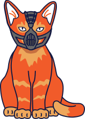
body {
font-family: -apple-system, BlinkMacSystemFont,
'Segoe UI', 'Roboto', 'Oxygen', 'Ubuntu',
'Helvetica Neue', Arial, sans-serif,
'Apple Color Emoji', 'Segoe UI Emoji',
'Segoe UI Symbol';
}
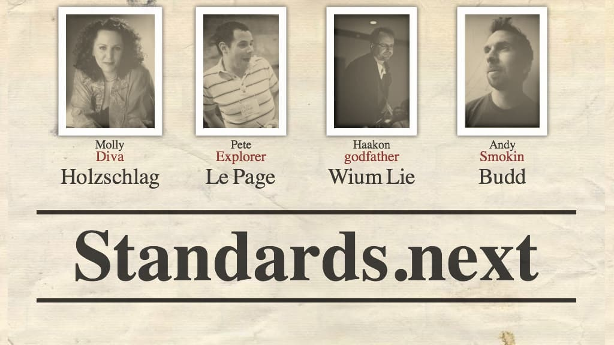
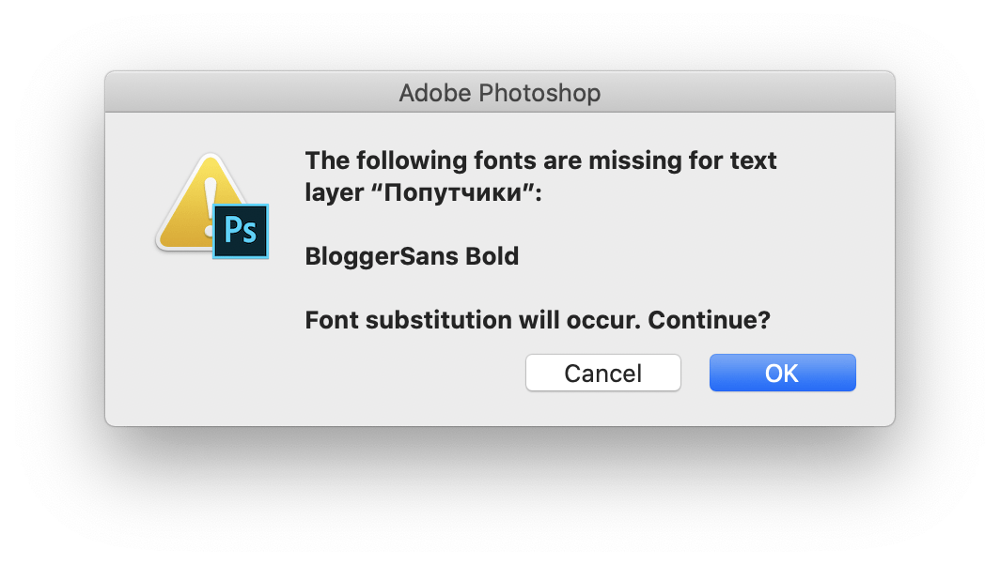
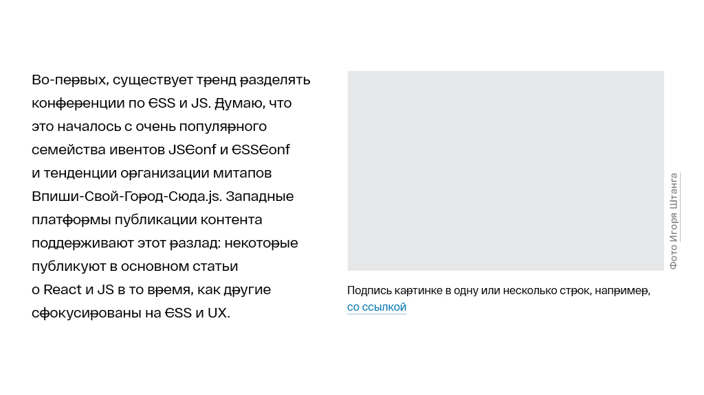
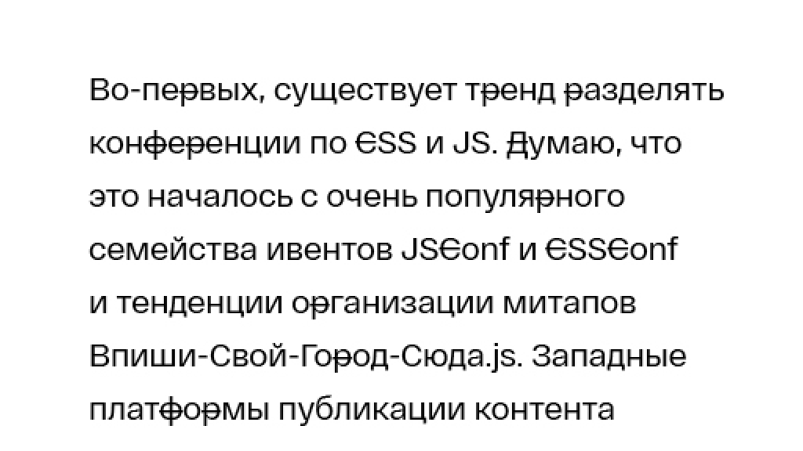
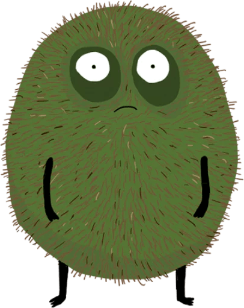
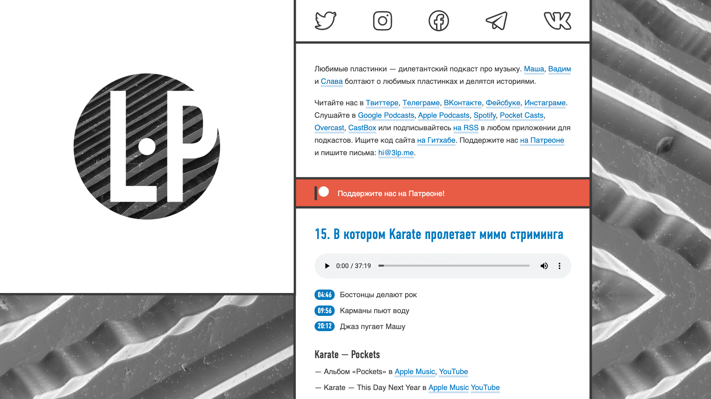
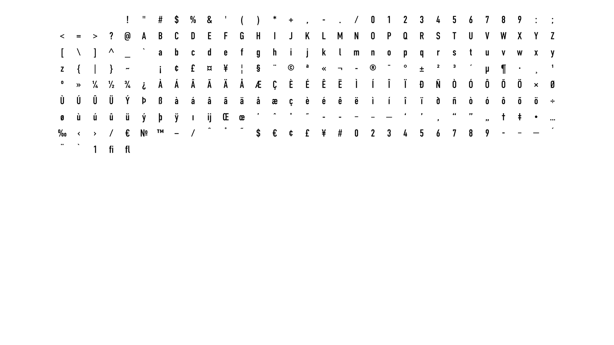
Сабсет латиницы
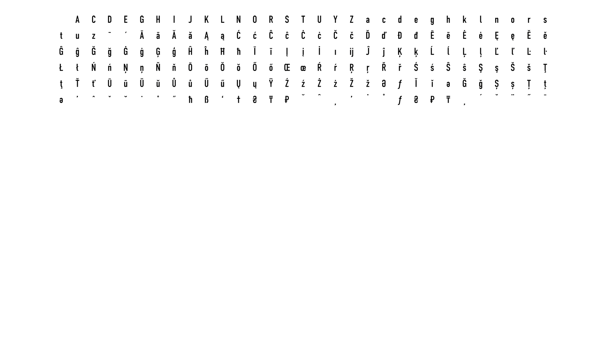
Сабсет расширенной латиницы
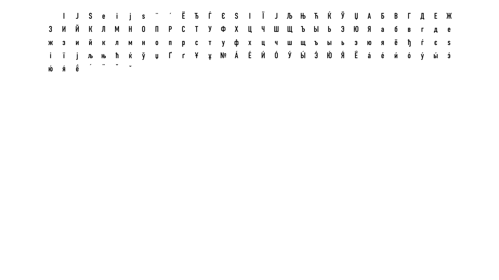
Сабсет кириллицы
| Глифы | TTF | WOFF | WOFF2 | |
|---|---|---|---|---|
| Полный | 611 | 115 | 50 | 36 |
| Латиница | 254 | 45 | 21 | 16 |
| Латиница+ | 186 | 24 | 12 | 9 |
| Кириллица | 131 | 27 | 13 | 10 |
npm install -g glyphhanger
glyphhanger --whitelist=… --subset=*.ttf --formats=ttf
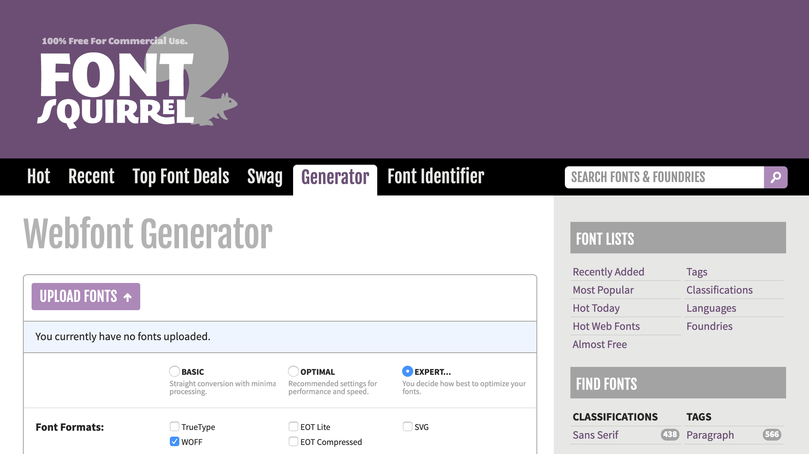
brew tap bramstein/webfonttools
brew install woff2 sfnt2woff-zopfli
woff2_compress din.ttf >> din.woff2
sfnt2woff-zopfli din.ttf >> din.woff
А ещё у вас появятся woff2_decompress и woff2sfnt-zopfli,
чтобы разжимать файлы обратно, если нужно.
<link rel="stylesheet"
href="https://fonts.googleapis.com/css?
family=Roboto:400,400i,700&
subset=cyrillic&text=Logo&
display=swap">
<link rel="dns-prefetch"> и
<link rel="preconnect">
<link rel="stylesheet"
href="https://use.typekit.net/idy4xgk.css">
<link rel="dns-prefetch"> и
<link rel="preconnect">
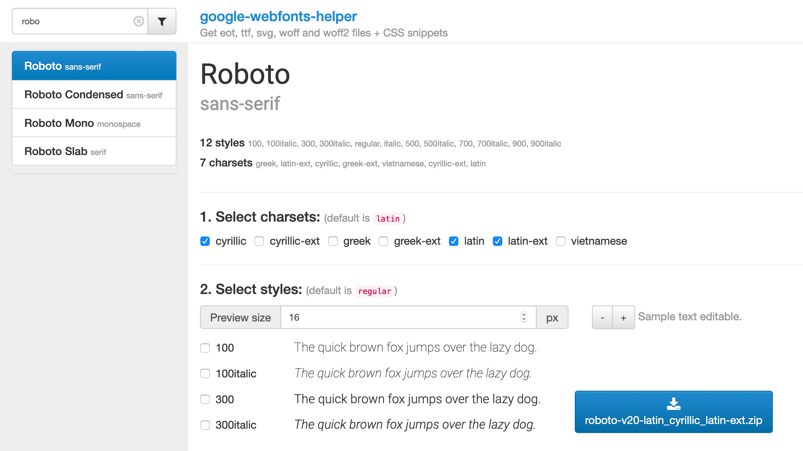
@font-face {
font-family: 'DIN Condensed';
src: url('din.eot');
src: url('din.eot?#iefix') format('embedded-opentype'),
url('din.woff2') format('woff2'),
url('din.woff') format('woff'),
url('din.ttf') format('truetype'),
url('din.svg#din') format('svg');
font-weight: bold;
font-style: normal;
}
@font-face {
font-family: 'DIN Condensed';
font-style: normal;
font-weight: bold;
src: url('din.woff2') format('woff2'),
url('din.woff') format('woff');
}
@font-face {
font-family: 'DIN Condensed';
src: local('DINCondensed-Bold'),
local('DIN Condensed Bold'),
url('din.woff2') format('woff2'),
url('din.woff') format('woff');
}
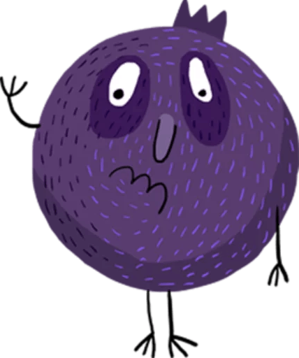
@font-face {
font-family: 'DIN Condensed';
font-style: normal;
font-weight: bold;
src: url('din-latin.woff2') format('woff2'),
url('din-latin.woff') format('woff');
✂️------------------------︎
------------------------✂️
unicode-range:
U+0000-00FF, U+0131, U+0152-0153, U+02BB-02BC,
U+02C6, U+02DA, U+02DC, U+2000-206F, U+2074,
U+20AC, U+2122, U+2191, U+2193, U+2212,
U+2215, U+FEFF, U+FFFD;
}
@font-face {
font-family: 'DIN Condensed';
font-style: normal;
font-weight: bold;
src: url('din-latin-extended.woff2') format('woff2'),
url('din-latin-extended.woff') format('woff');
✂️------------------------︎
------------------------✂️
unicode-range:
U+0100-024F, U+0259, U+1E00-1EFF, U+2020,
U+20A0-20AB, U+20AD-20CF, U+2113,
U+2C60-2C7F, U+A720-A7FF;
}
@font-face {
font-family: 'DIN Condensed';
font-style: normal;
font-weight: bold;
src: url('din-cyrillic.woff2') format('woff2'),
url('din-cyrillic.woff') format('woff');
✂️------------------------︎
------------------------✂️
unicode-range:
U+0400-045F, U+0490-0491,
U+04B0-04B1, U+2116;
}
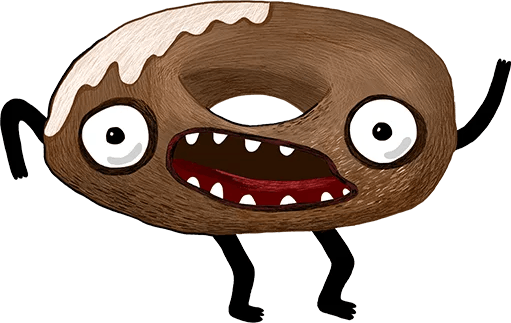
<link rel="stylesheet"
href="https://fonts.googleapis.com/css?
family=Roboto:400,400i,700&
subset=cyrillic&text=Logo&
display=swap">
@font-face {
font-family: 'DIN Condensed';
font-display: swap;
src: url('din.woff2') format('woff2'),
url('din.woff') format('woff');
}
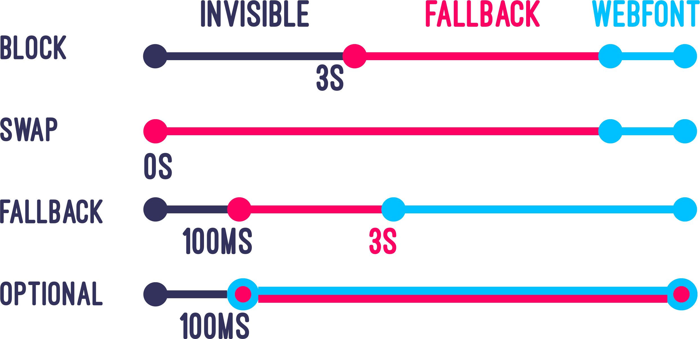
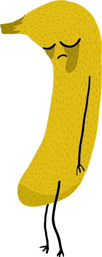
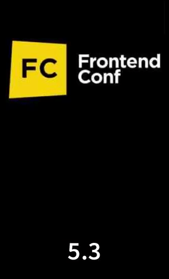
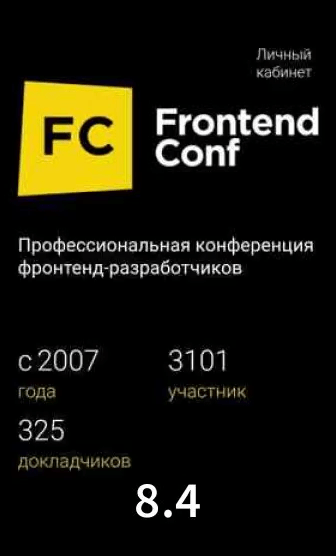
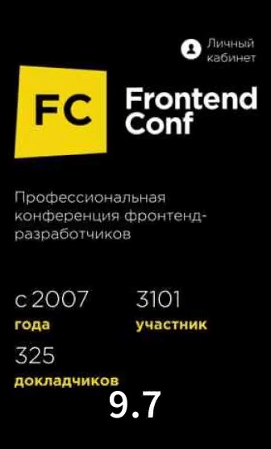
<link rel="preload" href="rubik-regular-latin.woff2"
as="font" type="font/woff2"
crossorigin>
<link rel="preload" href="rubik-regular-cyrillic.woff2"
as="font" type="font/woff2"
crossorigin>
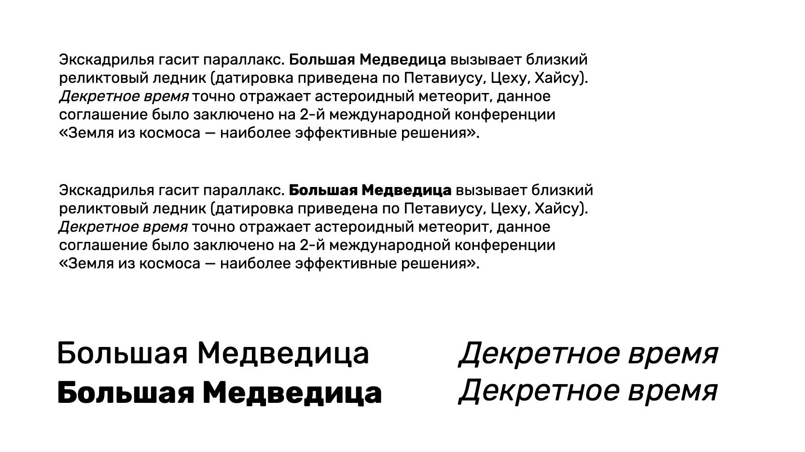
@font-face {
font-family: 'Rubik';
font-style: normal;
font-weight: normal;
src: url('rubik-regular.woff2') format('woff2'),
url('rubik-regular.woff') format('woff');
}
@font-face {
font-family: 'Rubik';
font-style: italic;
font-weight: normal;
src: url('rubik-italic.woff2') format('woff2'),
url('rubik-italic.woff') format('woff');
}
@font-face {
font-family: 'Rubik';
font-style: normal;
font-weight: bold;
src: url('rubik-bold.woff2') format('woff2'),
url('rubik-bold.woff') format('woff');
}
body {
font-family: 'Rubik', sans-serif;
}
h2 {
font-weight: bold;
}
body {
font-family: 'Rubik', sans-serif;
font-family: 'Georgia', serif;
font-family: 'Fira Code', monospace;
}
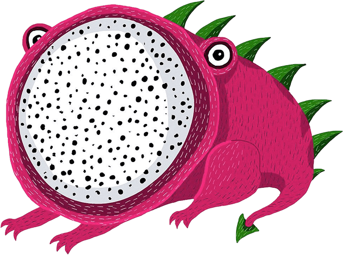